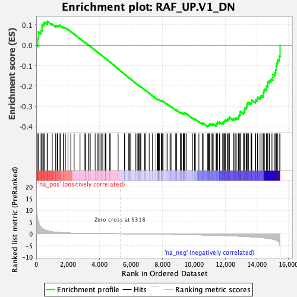

| | | Dataset | DE_genes |
| Phenotype | NoPhenotypeAvailable |
| Upregulated in class | na_neg |
| GeneSet | RAF_UP.V1_DN |
| Enrichment Score (ES) | -0.39955786 |
| Normalized Enrichment Score (NES) | -1.2765065 |
| Nominal p-value | 0.06258503 |
| FDR q-value | 0.34399045 |
| FWER p-Value | 1.0 |
Table: GSEA Results Summary

Fig 1: Enrichment plot: RAF_UP.V1_DN
Profile of the Running ES Score & Positions of GeneSet Members on the Rank Ordered List
| PROBE | GENE SYMBOL | GENE_TITLE | RANK IN GENE LIST | RANK METRIC SCORE | RUNNING ES | CORE ENRICHMENT | | 1 | CSTA | | | 102 | 6.090 | 0.0331 | No |
| 2 | TCN1 | | | 129 | 5.405 | 0.0667 | No |
| 3 | CA12 | | | 304 | 2.777 | 0.0735 | No |
| 4 | SLC39A8 | | | 365 | 2.375 | 0.0851 | No |
| 5 | GPATCH2 | | | 371 | 2.342 | 0.1001 | No |
| 6 | PDGFRL | | | 466 | 1.863 | 0.1061 | No |
| 7 | MICB | | | 515 | 1.692 | 0.1140 | No |
| 8 | FTO | | | 690 | 1.295 | 0.1111 | No |
| 9 | MDK | | | 712 | 1.255 | 0.1179 | No |
| 10 | JAK2 | | | 1017 | 0.832 | 0.1035 | No |
| 11 | CHST15 | | | 1239 | 0.651 | 0.0933 | No |
| 12 | TFAP2A | | | 1244 | 0.646 | 0.0972 | No |
| 13 | SOX9 | | | 1338 | 0.594 | 0.0950 | No |
| 14 | MSMB | | | 1376 | 0.573 | 0.0963 | No |
| 15 | GALC | | | 1451 | 0.542 | 0.0951 | No |
| 16 | GPD2 | | | 1456 | 0.540 | 0.0983 | No |
| 17 | EIF2S3 | | | 1528 | 0.506 | 0.0970 | No |
| 18 | VAV3 | | | 1735 | 0.413 | 0.0862 | No |
| 19 | KYNU | | | 1739 | 0.412 | 0.0887 | No |
| 20 | FANCF | | | 1835 | 0.376 | 0.0850 | No |
| 21 | ELOVL2 | | | 1841 | 0.374 | 0.0871 | No |
| 22 | KIAA1324 | | | 2015 | 0.321 | 0.0779 | No |
| 23 | GPC4 | | | 2192 | 0.269 | 0.0681 | No |
| 24 | BCL2 | | | 2407 | 0.225 | 0.0556 | No |
| 25 | SLC16A1 | | | 2779 | 0.165 | 0.0324 | No |
| 26 | TFF1 | | | 3050 | 0.136 | 0.0156 | No |
| 27 | EPB41L4B | | | 3127 | 0.128 | 0.0115 | No |
| 28 | ROBO1 | | | 3129 | 0.128 | 0.0123 | No |
| 29 | PMAIP1 | | | 3321 | 0.113 | 0.0005 | No |
| 30 | AGR2 | | | 3345 | 0.110 | -0.0003 | No |
| 31 | ASCL1 | | | 3431 | 0.105 | -0.0051 | No |
| 32 | ARNT2 | | | 3738 | 0.085 | -0.0246 | No |
| 33 | PPM1E | | | 3912 | 0.075 | -0.0354 | No |
| 34 | COL9A3 | | | 3969 | 0.072 | -0.0386 | No |
| 35 | INPP5F | | | 4042 | 0.067 | -0.0429 | No |
| 36 | LPGAT1 | | | 4119 | 0.063 | -0.0474 | No |
| 37 | PDZK1 | | | 4222 | 0.057 | -0.0537 | No |
| 38 | IRX5 | | | 4375 | 0.049 | -0.0633 | No |
| 39 | TMPRSS3 | | | 4382 | 0.048 | -0.0634 | No |
| 40 | ABCA12 | | | 4430 | 0.046 | -0.0662 | No |
| 41 | SHQ1 | | | 4661 | 0.034 | -0.0810 | No |
| 42 | MEGF9 | | | 4697 | 0.032 | -0.0831 | No |
| 43 | GREB1 | | | 5198 | 0.006 | -0.1157 | No |
| 44 | SHROOM2 | | | 5598 | -0.015 | -0.1417 | No |
| 45 | PDK3 | | | 5613 | -0.016 | -0.1425 | No |
| 46 | SH3BGRL | | | 5853 | -0.029 | -0.1580 | No |
| 47 | NPY1R | | | 5898 | -0.032 | -0.1606 | No |
| 48 | RASGRP1 | | | 5914 | -0.034 | -0.1614 | No |
| 49 | THADA | | | 5992 | -0.039 | -0.1662 | No |
| 50 | ALCAM | | | 6320 | -0.060 | -0.1872 | No |
| 51 | MAFB | | | 6407 | -0.066 | -0.1924 | No |
| 52 | CRNKL1 | | | 6481 | -0.071 | -0.1967 | No |
| 53 | DNAJC12 | | | 6496 | -0.073 | -0.1971 | No |
| 54 | OSTM1 | | | 6559 | -0.076 | -0.2007 | No |
| 55 | CELSR2 | | | 6579 | -0.078 | -0.2014 | No |
| 56 | BTG3 | | | 6626 | -0.083 | -0.2039 | No |
| 57 | CASK | | | 6636 | -0.083 | -0.2039 | No |
| 58 | MYB | | | 6874 | -0.100 | -0.2188 | No |
| 59 | TSPAN3 | | | 6944 | -0.106 | -0.2226 | No |
| 60 | IRS1 | | | 6955 | -0.107 | -0.2225 | No |
| 61 | UGDH | | | 7169 | -0.124 | -0.2356 | No |
| 62 | OSR2 | | | 7377 | -0.142 | -0.2483 | No |
| 63 | CCDC6 | | | 7594 | -0.161 | -0.2613 | No |
| 64 | MPDZ | | | 7671 | -0.168 | -0.2652 | No |
| 65 | CALB2 | | | 7708 | -0.171 | -0.2664 | No |
| 66 | SLC6A14 | | | 7730 | -0.173 | -0.2667 | No |
| 67 | CCDC170 | | | 7740 | -0.174 | -0.2661 | No |
| 68 | GULP1 | | | 7760 | -0.176 | -0.2662 | No |
| 69 | PMP22 | | | 7785 | -0.178 | -0.2666 | No |
| 70 | APBB2 | | | 7816 | -0.181 | -0.2674 | No |
| 71 | KDM6A | | | 7944 | -0.193 | -0.2745 | No |
| 72 | TFPI | | | 7953 | -0.194 | -0.2737 | No |
| 73 | SATB2 | | | 7961 | -0.194 | -0.2729 | No |
| 74 | MGP | | | 8000 | -0.198 | -0.2741 | No |
| 75 | IGFBP4 | | | 8043 | -0.203 | -0.2755 | No |
| 76 | EGR3 | | | 8052 | -0.204 | -0.2747 | No |
| 77 | MYBL1 | | | 8238 | -0.222 | -0.2853 | No |
| 78 | ENAH | | | 8343 | -0.234 | -0.2906 | No |
| 79 | MED13L | | | 8491 | -0.250 | -0.2986 | No |
| 80 | SDC2 | | | 8556 | -0.257 | -0.3011 | No |
| 81 | STC2 | | | 8848 | -0.292 | -0.3182 | No |
| 82 | CSTF2T | | | 8908 | -0.299 | -0.3201 | No |
| 83 | ZHX2 | | | 8917 | -0.300 | -0.3187 | No |
| 84 | B3GALNT1 | | | 9141 | -0.328 | -0.3311 | No |
| 85 | DDIT4 | | | 9151 | -0.329 | -0.3296 | No |
| 86 | SGCG | | | 9224 | -0.338 | -0.3321 | No |
| 87 | SLC1A1 | | | 9327 | -0.350 | -0.3365 | No |
| 88 | SIDT1 | | | 9354 | -0.353 | -0.3358 | No |
| 89 | RHOBTB3 | | | 9377 | -0.356 | -0.3350 | No |
| 90 | SCUBE2 | | | 9384 | -0.356 | -0.3330 | No |
| 91 | ARL3 | | | 9420 | -0.361 | -0.3330 | No |
| 92 | AUTS2 | | | 9434 | -0.364 | -0.3314 | No |
| 93 | MINPP1 | | | 9551 | -0.381 | -0.3365 | No |
| 94 | TGFB2 | | | 9925 | -0.436 | -0.3581 | No |
| 95 | LIN7C | | | 10043 | -0.453 | -0.3628 | No |
| 96 | GHR | | | 10109 | -0.463 | -0.3640 | No |
| 97 | PDCD4 | | | 10322 | -0.493 | -0.3746 | No |
| 98 | SLC7A2 | | | 10555 | -0.529 | -0.3863 | No |
| 99 | FAM216A | | | 10567 | -0.532 | -0.3836 | No |
| 100 | KITLG | | | 10591 | -0.537 | -0.3816 | No |
| 101 | HSPB8 | | | 10867 | -0.577 | -0.3958 | Yes |
| 102 | BAMBI | | | 10910 | -0.583 | -0.3947 | Yes |
| 103 | MYO1B | | | 10941 | -0.589 | -0.3928 | Yes |
| 104 | GDAP1 | | | 10995 | -0.596 | -0.3924 | Yes |
| 105 | ZNF32 | | | 11018 | -0.601 | -0.3899 | Yes |
| 106 | ABAT | | | 11022 | -0.602 | -0.3862 | Yes |
| 107 | TGIF2 | | | 11151 | -0.627 | -0.3905 | Yes |
| 108 | PLS1 | | | 11163 | -0.629 | -0.3871 | Yes |
| 109 | TFF3 | | | 11232 | -0.643 | -0.3873 | Yes |
| 110 | SLC24A3 | | | 11413 | -0.681 | -0.3946 | Yes |
| 111 | PLCB4 | | | 11415 | -0.682 | -0.3902 | Yes |
| 112 | PGR | | | 11434 | -0.685 | -0.3870 | Yes |
| 113 | PKP4 | | | 11469 | -0.692 | -0.3847 | Yes |
| 114 | SYTL2 | | | 11490 | -0.697 | -0.3814 | Yes |
| 115 | RRN3 | | | 11496 | -0.698 | -0.3772 | Yes |
| 116 | PCSK6 | | | 11629 | -0.727 | -0.3811 | Yes |
| 117 | CTNNAL1 | | | 11638 | -0.731 | -0.3768 | Yes |
| 118 | ARMC9 | | | 11830 | -0.768 | -0.3843 | Yes |
| 119 | FTSJ1 | | | 11861 | -0.774 | -0.3812 | Yes |
| 120 | GFRA1 | | | 11864 | -0.775 | -0.3762 | Yes |
| 121 | FRAT2 | | | 11920 | -0.790 | -0.3747 | Yes |
| 122 | INPP4B | | | 11947 | -0.793 | -0.3712 | Yes |
| 123 | TTC39A | | | 11992 | -0.803 | -0.3688 | Yes |
| 124 | IGFBP2 | | | 12028 | -0.811 | -0.3658 | Yes |
| 125 | IGF1R | | | 12139 | -0.839 | -0.3675 | Yes |
| 126 | GTF2I | | | 12143 | -0.840 | -0.3622 | Yes |
| 127 | IFT57 | | | 12209 | -0.857 | -0.3609 | Yes |
| 128 | TCF12 | | | 12247 | -0.864 | -0.3577 | Yes |
| 129 | DLG5 | | | 12257 | -0.867 | -0.3526 | Yes |
| 130 | DLC1 | | | 12509 | -0.930 | -0.3629 | Yes |
| 131 | PALLD | | | 12552 | -0.942 | -0.3595 | Yes |
| 132 | NEDD4L | | | 12661 | -0.970 | -0.3603 | Yes |
| 133 | IGFBP5 | | | 12691 | -0.979 | -0.3558 | Yes |
| 134 | TRPS1 | | | 12817 | -1.016 | -0.3573 | Yes |
| 135 | TM4SF1 | | | 12828 | -1.021 | -0.3513 | Yes |
| 136 | EPB41L2 | | | 12855 | -1.029 | -0.3463 | Yes |
| 137 | TBC1D30 | | | 12891 | -1.042 | -0.3417 | Yes |
| 138 | IL24 | | | 12937 | -1.057 | -0.3378 | Yes |
| 139 | JMJD1C | | | 12940 | -1.058 | -0.3310 | Yes |
| 140 | ID1 | | | 12950 | -1.061 | -0.3247 | Yes |
| 141 | BTBD3 | | | 13149 | -1.120 | -0.3303 | Yes |
| 142 | SLC19A2 | | | 13193 | -1.135 | -0.3257 | Yes |
| 143 | CAV1 | | | 13236 | -1.150 | -0.3209 | Yes |
| 144 | MYLK | | | 13238 | -1.151 | -0.3135 | Yes |
| 145 | PLCB1 | | | 13249 | -1.155 | -0.3066 | Yes |
| 146 | SPIN1 | | | 13333 | -1.184 | -0.3043 | Yes |
| 147 | EFNB2 | | | 13352 | -1.195 | -0.2976 | Yes |
| 148 | MYO10 | | | 13377 | -1.205 | -0.2913 | Yes |
| 149 | SNAP23 | | | 13382 | -1.206 | -0.2837 | Yes |
| 150 | S100A14 | | | 13470 | -1.242 | -0.2813 | Yes |
| 151 | WASF3 | | | 13623 | -1.300 | -0.2827 | Yes |
| 152 | DKK1 | | | 13662 | -1.316 | -0.2766 | Yes |
| 153 | SOX4 | | | 13678 | -1.321 | -0.2690 | Yes |
| 154 | TBC1D16 | | | 13903 | -1.424 | -0.2743 | Yes |
| 155 | CLIC3 | | | 13930 | -1.436 | -0.2666 | Yes |
| 156 | SERPINA3 | | | 14040 | -1.495 | -0.2640 | Yes |
| 157 | CBFA2T3 | | | 14056 | -1.505 | -0.2551 | Yes |
| 158 | MXI1 | | | 14201 | -1.603 | -0.2541 | Yes |
| 159 | CPE | | | 14271 | -1.648 | -0.2478 | Yes |
| 160 | GAPVD1 | | | 14392 | -1.712 | -0.2445 | Yes |
| 161 | CCDC22 | | | 14401 | -1.718 | -0.2338 | Yes |
| 162 | RND3 | | | 14439 | -1.744 | -0.2248 | Yes |
| 163 | ID2 | | | 14476 | -1.770 | -0.2156 | Yes |
| 164 | PTBP2 | | | 14600 | -1.874 | -0.2114 | Yes |
| 165 | PCGF3 | | | 14609 | -1.881 | -0.1997 | Yes |
| 166 | PLK2 | | | 14691 | -1.962 | -0.1921 | Yes |
| 167 | DIDO1 | | | 14694 | -1.965 | -0.1794 | Yes |
| 168 | ZBTB10 | | | 14792 | -2.058 | -0.1723 | Yes |
| 169 | TSC22D3 | | | 14906 | -2.172 | -0.1655 | Yes |
| 170 | BAG3 | | | 15016 | -2.328 | -0.1575 | Yes |
| 171 | SMAD7 | | | 15019 | -2.330 | -0.1424 | Yes |
| 172 | PPP1R3C | | | 15142 | -2.535 | -0.1338 | Yes |
| 173 | LRIG1 | | | 15196 | -2.660 | -0.1199 | Yes |
| 174 | ABLIM1 | | | 15224 | -2.723 | -0.1038 | Yes |
| 175 | CCND1 | | | 15250 | -2.789 | -0.0873 | Yes |
| 176 | SELENBP1 | | | 15313 | -2.992 | -0.0718 | Yes |
| 177 | PXDN | | | 15418 | -3.777 | -0.0539 | Yes |
| 178 | FOS | | | 15471 | -8.771 | 0.0000 | Yes |
Table: GSEA details [plain text format]
Fig 2: RAF_UP.V1_DN: Random ES distribution
Gene set null distribution of ES for RAF_UP.V1_DN